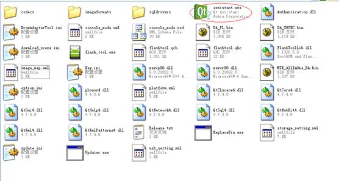

[Description]
l Application cannot find Qt Assistant or the Qt Assistant version is not correct.
[Solution]
1. Open the Tool folder and check if the assistant.exe is existing;
2. Click assistant.exe to check whether it can start correctly;
3. If not, please send the error report to us.
